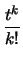

Función Generadora de Momentos
Si X es una variable aleatoria se llama función generadora de momentos a la esperanza de etX y se denota por mX(t)
Las siguientes líneas ayudarán a entender el porqué de este nombre. Supongamos que X es una variable aleatoria que toma valores 0, 1, 2,..., entonces
| mX(t) | = | E(etX) | |
| = | |||
| = | |||
| = | |||
| = |  |
||
| = | E(Xk). |
Esta deducción utiliza una propiedad importante de las sumatorias que en general no es válida y es el intercambio de las sumatorias que se hace. Si el lector es paciente puede expandir cada una de las sumas y verificar que es posible el reordenamiento practicado.
Como notará esta última serie tiene como parte de sus coeficientes los momentos de orden k, de hecho es bastante sencillo demostrar el siguiente lema
Si X es una variable aleatoria con función generadora de momentos mX(t) se tiene que
| m(n)X(0) = E(Xn). | (3.12) |
Es decir si tenemos la función generadora de momentos basta con derivarla n veces y evaluar en 0 para obtener el momento de orden n.